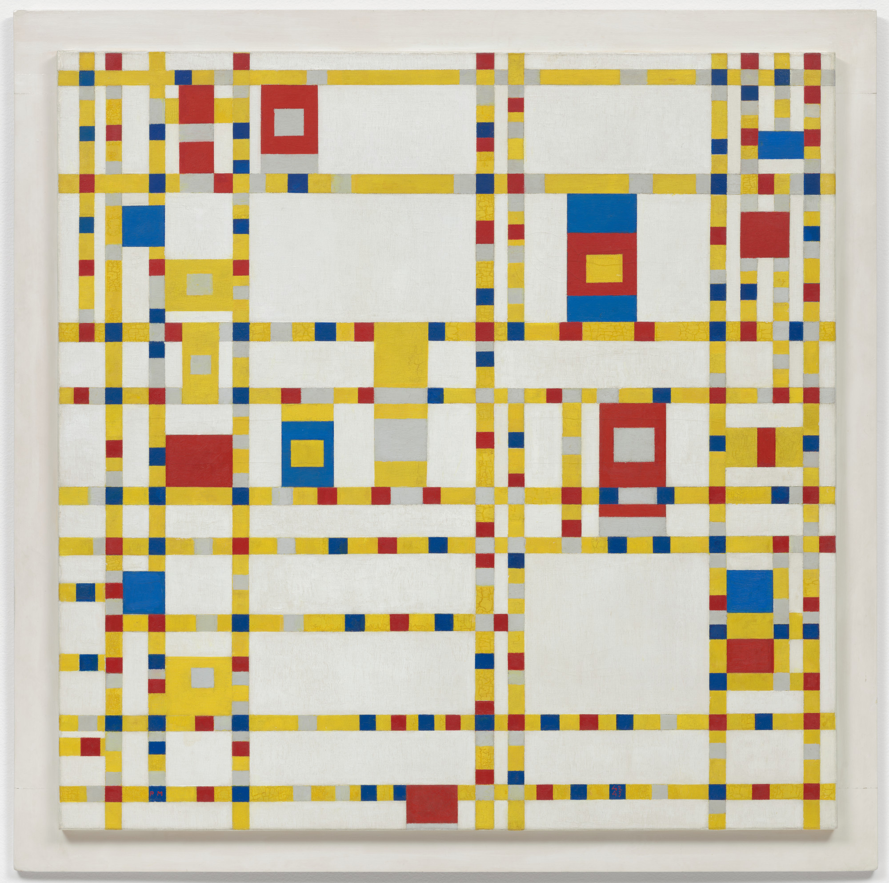
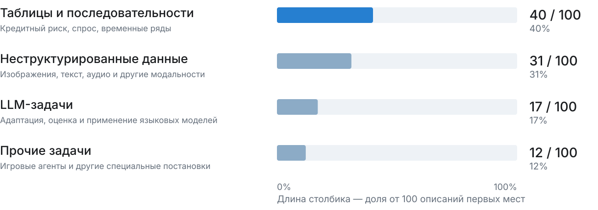
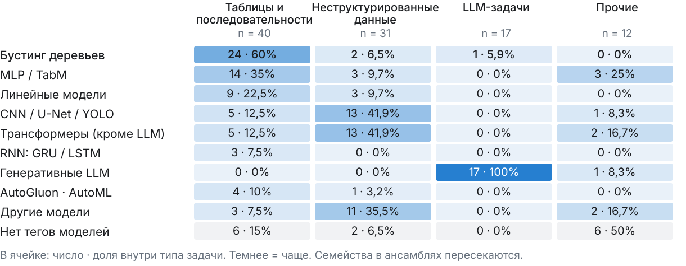
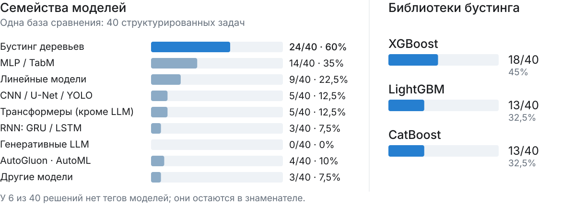
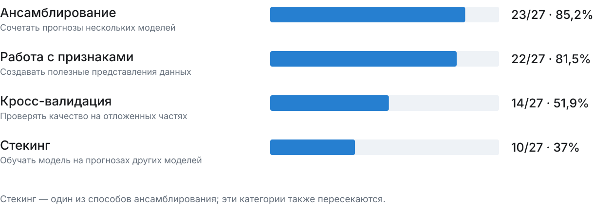
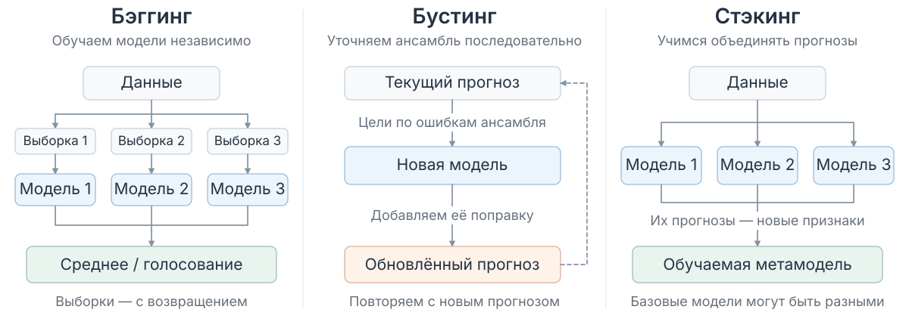
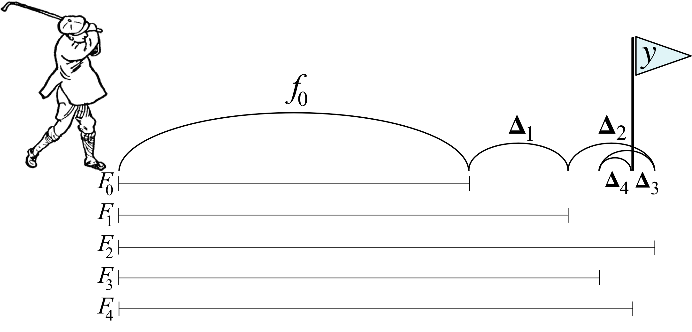
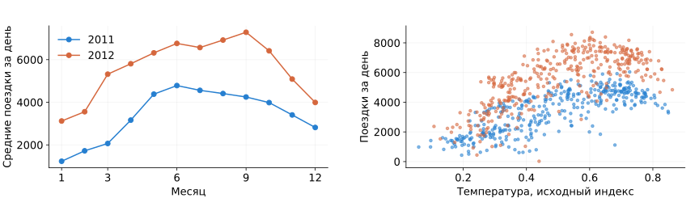
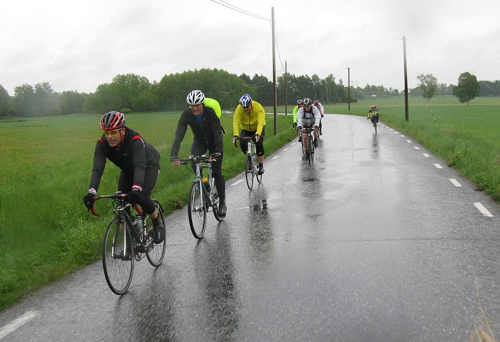

Между частями — перерыв.
В дополнении: деревья CatBoost, PredictionValuesChange и сравнение библиотек.
Вспомним случайный лес, затем построим ансамбль,
в котором каждое новое дерево исправляет предыдущий прогноз.
100 описаний первых мест · ноябрь 2023 — сентябрь 2026

Источник всех четырёх слайдов: отчёт по Kaggle, выборка Julius Uhlmann. Это доступные описания победителей, а не все соревнования Kaggle.
Какие методы отмечены в описаниях первых мест?

Бустинг особенно часто встречается на структурированных данных.
Источник: отчёт, построчная разметка 100 первых мест. AutoGluon — система AutoML; «нет тегов» означает неполноту описаний.
Какие модели встречаются в 40 победных решениях этой группы?

Бустинг встречается в 24 из 40 решений на таблицах и последовательностях.
Источник: отчёт. Библиотеки могут входить в один ансамбль; их частоты не складываются и не являются рейтингом качества.
27 описаний первых мест с бустингом · все типы задач

Источник: отчёт. Теги пересекаются. Отсутствие тега не означает, что команда не использовала приём.
Один столбец — один день.
Предсказываем число заказов.
| День | 1 | 2 | 3 | 4 | 5 | 6 |
|---|---|---|---|---|---|---|
| Температура, °C | 10 | 12 | 14 | 20 | 22 | 24 |
| Заказы, y | 2 | 4 | 3 | 8 | 9 | 10 |
Bagging = bootstrap aggregating.
Обучаем модели на выборках с возвращением и объединяем их прогнозы.
Для каждого дерева случайно набираем строки.
Некоторые повторяются, некоторые не попадают в выборку.
Независимо обучаем деревья на исходных ответах y.
В регрессии усредняем прогнозы деревьев.
Когда признаков несколько, случайный лес выбирает их подмножество в каждом узле.
В нашем примере признак один, поэтому разнообразие даёт bootstrap.

Случайный лес: бэггинг деревьев + случайный выбор признаков в узлах.
Для стэкинга: метамодель учим на прогнозах для объектов, которых базовая модель не видела при обучении.
scikit-learn: bagging, gradient boosting, stacking. Прогнозы для метамодели обычно получают через кросс-валидацию.
У нас уже есть дерево: условие в узле, число в листе.
Теперь меняем, чему обучаем каждое дерево и как собираем ответы.
Каждое дерево предсказывает исходный ответ y на своей случайной выборке.
Обучение деревьев не зависит от ответов соседних деревьев.
Усреднение уменьшает нестабильность отдельных деревьев.
Следующее дерево предсказывает поправку к текущему прогнозу.
Новые цели зависят от уже построенной суммы деревьев.
Последовательно уточняем прогноз всего ансамбля.

Лунка y — правильный ответ.
Положение F — текущий прогноз.
Удар Δ — очередная поправка.
Перелетели цель?
Следующая поправка меняет знак.
После каждого удара заново оцениваем, что осталось исправить.
В бустинге одно дерево задаёт поправки сразу для многих объектов.
Иллюстрация: Gradient boosting: Distance to target; изображение гольфиста — USF ClipArt ETC, как указано авторами. На рисунке f₀ — первый прогноз; F₀, F₁, … — накопленный результат.
Здесь — небольшой коэффициент, скорость обучения.
Он ограничивает силу каждой поправки.
Для квадратичной ошибки новое дерево обучают предсказывать остатки:
x — признаки объекта. «Дерево» в сумме — числовой ответ этого дерева для x.
Для нового объекта складываем готовые ответы деревьев: знать его правильный ответ не нужно.
| Обозначение | Смысл |
|---|---|
| Начальный прогноз: среднее по train для квадратичной ошибки | |
| Ответ дерева № m — очередная поправка | |
| Сколько деревьев добавили и какую долю поправок взяли |
rᵢ — остаток для объекта i перед деревом № m. Крышка над y означает прогноз;
индекс в скобках считает деревья, а не обозначает степень.
Те же шесть дней: признак — температура, ответ — число заказов.
| Температура, °C | 10 | 12 | 14 | 20 | 22 | 24 |
|---|---|---|---|---|---|---|
| Число заказов | 2 | 4 | 3 | 8 | 9 | 10 |
Всем дням предсказываем среднее:
(2 + 4 + 3 + 8 + 9 + 10) / 6 = 6 заказов.
Нужная поправка = правильный ответ − текущий прогноз.
| Температура, °C | 10 | 12 | 14 | 20 | 22 | 24 |
|---|---|---|---|---|---|---|
| Число заказов | 2 | 4 | 3 | 8 | 9 | 10 |
| Прогноз, заказы | 6 | 6 | 6 | 6 | 6 | 6 |
| Поправка, заказы | −4 | −2 | −3 | +2 | +3 | +4 |
−4: предсказали лишние четыре заказа — нужно вычесть.
+4: недосчитали четыре заказа — нужно прибавить.
Температуры остаются входами. Новые обучающие ответы — поправки.
Дерево предложило +3 заказа. Можно прибавить всё или сделать меньший шаг.
| Доля поправки | Что прибавляем | Новый прогноз |
|---|---|---|
| 100% | 1 × 3 = 3 | 6 + 3 = 9 |
| 50% | 0,5 × 3 = 1,5 | 6 + 1,5 = 7,5 |
| 20% | 0,2 × 3 = 0,6 | 6 + 0,6 = 6,6 |
Эту долю называют скоростью обучения, или learning_rate.
В формулах её обозначают греческой буквой η («эта»).
Маленький шаг обычно требует больше деревьев. Качество проверяем на новых данных.
Начинаем со среднего ответа. Затем повторяем три шага.
Вычислить остатки:
правильный ответ − текущий прогноз.
Подобрать дерево к остаткам.
Перебрать признаки и пороги. Для каждого разбиения взять среднее остатков в каждом листе и посчитать сумму квадратов отклонений от этих средних. Выбрать разбиение с наименьшей суммой.
Добавить поправку:
новый прогноз = текущий прогноз + η × ответ дерева.
Для «решающего пня» так находим лучшее разбиение. Более глубокое дерево строим жадно: повторяем поиск внутри узлов до ограничения глубины или размера листа. Глобально лучшее дерево этим не гарантируется.
Повторяем шаги 1–3 с новыми остатками. Старые деревья не меняем.
Каждое дерево исправляет часть оставшейся ошибки. Оно не обязано решить задачу целиком.
Может выделить очень маленькие группы.
Их средние поправки легко подстраиваются под случайный шум.
Объединяет больше объектов одним правилом.
Даёт более простую поправку; другие правила добавят следующие деревья.
Ограничение глубины — регуляризация.
Слишком маленькая глубина тоже может мешать обучению.
У бинарного дерева глубины 2 не более 4 листьев, глубины 6 — 64.
Сам ансамбль остаётся сложным: простота отдельных деревьев не исключает переобучения.
Температура > 25 °C?
Поправка зависит только от температуры.
Сумма таких деревьев складывает отдельные эффекты столбцов.
Температура > 25 °C?
↳ Сегодня выходной?
Можно выделить именно жаркие выходные.
Эффект одного признака может зависеть от другого.
Насколько сложную поправку может сделать одно дерево.
Какую долю найденной поправки добавляем.
Сколько последовательных поправок успеем сделать.
Ещё есть ограничения листьев, L2-регуляризация и случайность обучения.
Настройки проверяем совместно, на отложенных данных.
Задать достаточно большой предел числа деревьев.
После каждого шага считать потерю на validation.
Если улучшений долго нет — остановить обучение
и сохранить лучшую проверенную итерацию.
Повторный подбор под один набор делает его частью настройки.
Для итоговой оценки нужен отдельный контроль.
| Библиотека | Рост дерева по умолчанию | Характерные возможности |
|---|---|---|
| XGBoost | По глубине: сначала узлы ближе к корню. В разных узлах — разные условия. | External memory: обучение с чтением данных порциями, когда вся таблица не помещается в память. |
| LightGBM | По листьям: следующим делит лист с наибольшим выигрышем. | GOSS: отбор строк по градиентам. EFB: совместное хранение разреженных признаков, редко ненулевых одновременно. |
| CatBoost | Симметричное дерево: одно и то же условие во всех узлах уровня. | Статистики категорий по предшествующим объектам в перестановке. Отдельный режим Ordered boosting. |
Рассмотрим два класса: y = 0 или y = 1.
Деревья по-прежнему выдают числовые поправки.
| Регрессия | Бинарная классификация | |
|---|---|---|
| Что складываем | Поправки к прогнозу числа | Поправки к оценке F (score). Вероятность: |
| Что минимизируем | Квадратичную потерю |
Logloss |
| Чему учим новое дерево | Остаткам |
Разности метки и вероятности |
Старт: q — доля класса 1 в train.
Всем объектам задаём , поэтому начальная вероятность p = q.
Посчитать сигналы: .
Метка известна, вероятность берём у текущего ансамбля.
Обучить регрессионное дерево на парах .
Признаки и пороги выбираем по квадратам ошибок этих сигналов.
Обновить оценки и вероятности:
.
В базовом варианте ответ листа — среднее сигналов. В scikit-learn после выбора структуры значения листьев дополнительно уточняют по Logloss, перед добавлением дерева.
Повторяем шаги 1–3. Поправку добавляем к F, затем пересчитываем p.
После обучения новый объект проходит по всем деревьям.
Складываем поправки к F, вычисляем вероятность и применяем порог.
1, если p ≥ 0,5
0, если p < 0,5
| Оценка F | Вероятность p | Предсказанный класс |
|---|---|---|
| −2 | 0,12 | 0 |
| 0 | 0,50 | 1 |
| +2 | 0,88 | 1 |
На следующем графике линия разделяет области p < 0,5 и p ≥ 0,5.
Новые деревья меняют оценки F и положение границы.
0,5 — выбранный здесь порог. Для другой метрики или цены ошибки его подбирают на validation.
Деревья находят пороги и сочетания условий. Каждый столбец имеет свой смысл и масштаб.
Глубина задаёт сложность сочетаний признаков.
Новое дерево приближает поправки, заданные градиентом потери.
Шаг, глубина и остановка сдерживают подгонку под шум.
Эффективные реализации позволяют проверять признаки, параметры и разбиения.
Варианты сравниваем по одной схеме проверки качества.
Качество зависит от признаков, настроек и схемы проверки.
После перерыва разберём, на какие признаки опирается обученный ансамбль.
Механизмы, исследования и ограничения: почему бустинг эффективен в соревнованиях.
Почему второе дерево получает другие обучающие ответы?
Что означает скорость обучения 0,1?
Что меняется в обучении, когда вместо регрессии решаем классификацию?
Перерыв 10 минут.
Дальше — интерпретация модели и важность признаков.
Модель обучена. Какие признаки она использует
и как проверить их полезность?
Одна задача — Bike Sharing. Деревья, важности, SHAP и ICE.
При выборе разбиения считаем уменьшение ошибки. Эти выигрыши можно сложить по признакам.
XGBoost, LightGBM и CatBoost дают готовые оценки. Нужно понимать, что именно они считают.
Хотим проверить, на какие данные опирается модель и какие признаки можно исключить.
Feature importance — общая задача интерпретации.
Эти вопросы возникают и у случайного леса, и у других моделей.
Capital Bikeshare · 731 день · 2011–2012 годы.
Задача: по погоде и календарю оценить число поездок за день.
| Группа | Столбцы |
|---|---|
| Погода | Температура, ощущаемая температура, влажность, ветер, тип погоды |
| Календарь | Год, месяц, рабочий день |
| Шумовой признак | Добавлен нами: независимое число из U(0, 1) для каждого дня |
| Ответ | cnt — общее число поездок |
Генерация: np.random.default_rng(2026).uniform(0, 1, 731).
Равномерный шум, независимо от признаков и числа поездок; seed фиксирован для воспроизводимости.
casual + registered = cnt: эти два столбца не подаём модели.
Температуры и ветер оставляем в исходных нормированных индексах.
UCI Bike Sharing · Hadi Fanaee-T · CC BY 4.0. Одна строка day.csv — один день работы проката.

Сезонность и различие годов.
Видны на графике среднемесячного спроса.
Температура связана со спросом.
Но здесь она меняется вместе с сезоном и годом.

Ощущаемая и обычная температура почти дублируются: корреляция на validation 0,997.
Это пригодится для сравнения перестановок и удаления признака.
438 train — обучение.
146 validation — выбор настроек и анализ.
147 test — итоговая оценка.
Случайное разбиение с сохранением месяцев обоих годов. Это проверка внутри 2011–2012, не перенос на будущий год.
GradientBoostingRegressor(
n_estimators=200, max_depth=3,
learning_rate=0.05, min_samples_leaf=5,
loss="squared_error", random_state=42
)Выбрана по RMSE на validation из 18 настроек.
| Метрика бустинга | Train | Validation | Test |
|---|---|---|---|
| RMSE, поездки ↓ | 393,6 | 627,8 | 826,3 |
| MAE, поездки ↓ | 292,0 | 482,8 | 560,2 |
| R² ↑ | 0,959 | 0,899 | 0,811 |
Среднее train как постоянный прогноз: RMSE на validation 1 974, на test 1 907.
Split count и gain — статистика деревьев на train; остальные оценки — на 146 validation-днях.
Feature elimination дополнительно обучает модели без выбранных столбцов.
Идея. Посчитать, сколько узлов ансамбля используют каждый признак.
Одно условие с признаком → +1 к его счётчику.
В нашей модели: ветер — 228 условий; шумовой признак — 130.
Просто и быстро: достаточно посмотреть условия в деревьях.
Показывает, какие столбцы модель использует чаще.
Большой и малый выигрыш дают одинаковые +1.
Шум тоже попадает в условия. Частота не равна пользе для качества.
В API: LightGBM: split, XGBoost: weight. Числа — по всем узлам нашей модели, не по числу деревьев.
Идея. Сложить улучшения, которые дали разбиения по каждому признаку.
В каждом узле: выигрыш = ошибка до разбиения − ошибка после.
Суммируем по узлам всех деревьев. Для рейтинга переводим суммы в проценты.
Быстро: статистика уже есть в обученных деревьях.
Связан с тем, как лес и бустинг выбирают условия.
Измеряется на train: шум тоже может дать выигрыш.
Много порогов и похожие признаки могут искажать рейтинг.
scikit-learn: impurity-based importance. Здесь суммируем выигрыши SSE. В XGBoost gain — средний выигрыш, total_gain — сумма.
Перестановочная важность
Идея. Испортить один столбец на проверке и измерить, насколько ухудшилось качество.
Фиксируем модель → перемешиваем значения признака → считаем новую ошибку.
Важность = RMSE после перемешивания − исходная RMSE.
Проверяет качество на новых объектах; подходит любой модели.
Переобучать модель не нужно.
Связанные признаки могут подменять друг друга.
Перемешивание создаёт необычные сочетания; нужны повторы.
scikit-learn: permutation importance. Модель фиксирована; оценка на validation.
Удаление признака и переобучение
Идея. Убрать признак и проверить, как научится модель на оставшихся столбцах.
Обучить на всех признаках → удалить один столбец → обучить заново.
Важность = RMSE новой модели − RMSE исходной на той же validation.
Напрямую проверяет предложение «можно ли убрать столбец».
Модель может использовать оставшиеся признаки иначе.
Дорого: для полного рейтинга нужно новое обучение на каждый столбец.
Результат зависит от разбиения, случайности и настройки обучения.
SHapley Additive exPlanations — аддитивные объяснения Шепли
Идея. Разложить прогнозы на вклады признаков и сравнить типичный размер вкладов.
Для каждого объекта: прогноз = база + вклады признаков.
Для рейтинга: важность признака = средний |его вклад| по объектам.
Даёт общий рейтинг и объяснение отдельного прогноза.
Для отдельного объекта видны знак и размер вклада.
Большой вклад не гарантирует пользу для качества.
Расчёт сложнее; результат зависит от фона и учёта связей признаков.
Рассмотрим первый день 2012 года, попавший в validation.
Средний прогноз на 32 фоновых train-днях.
Модель знает девять значений признаков.
Модель заметно ошиблась.
Объяснение не исправляет ошибку.
Распределим отличие прогноза от базы: −735 поездок.
SHAP объясняет 4 135, а не наблюдавшиеся 2 294.
Для каждого признака усредним размер его SHAP-вклада по проверочным объектам.
Вклад +10 в один день и −10 в другой.
Среднее: 0.
Средний размер вклада: 10.
Насколько сильно признак обычно сдвигает прогноз.
Направление и особенности отдельных объектов при усреднении теряются.
Так сортируются строки следующего графика. Это размер вклада, а не падение качества.
| Способ | Что означает большая важность | Переобучение |
|---|---|---|
| 1. Split count | Часто встречается в условиях деревьев |
Нет |
| 2. Gain | Уменьшал ошибку при построении деревьев |
Нет |
| 3. Permutation importance | Порча значений ухудшает качество готовой модели |
Нет |
| 4. Feature elimination | Без столбца новая модель предсказывает хуже |
Да |
| 5. Средний |SHAP| | Даёт большие вклады в отличие прогноза от базы |
Нет |
Разные рейтинги могут быть правильными одновременно.
Выбираем способ под вопрос, который хотим проверить.
Рейтинг не показывает, как меняется прогноз при изменении признака.
Рассмотрим зависимость от температуры.
Individual Conditional Expectation
Индивидуальное условное ожидание
Берём один день. Меняем температуру по сетке, остальные признаки этого дня оставляем прежними.
Прогноз для каждого значения температуры — точки одной ICE-кривой.
Partial Dependence Plot
График частичной зависимости
Строим ICE для всех дней validation. При каждой температуре усредняем их прогнозы.
PDP показывает среднюю реакцию модели; различия между днями на нём не видны.
Это зависимости прогнозов модели, не причинные эффекты. При связанных признаках подстановка может создавать нереалистичные сочетания.
Ансамбль складывает небольшие поправки. Каждое дерево обучается с учётом текущего прогноза.
Для квадратичной ошибки цель дерева — остаток. Для бинарной Logloss — разность y − p.
Глубину, скорость обучения и число деревьев выбираем по validation.
Split count и gain: какие признаки использовались при обучении.
Перестановка и удаление: насколько от признака зависит качество.
SHAP: вклады в прогноз.
ICE/PDP: форма зависимости прогноза от признака.
Важность помогает сформулировать гипотезу.
Пользу изменения модели проверяем по качеству на отложенных данных.
Дополнение · после основного занятия
Те же 9 признаков и разбиение: 438 train / 146 validation / 147 test.
CatBoostRegressor(
iterations=200, depth=3,
learning_rate=0.05, loss_function="RMSE",
grow_policy="SymmetricTree",
boosting_type="Plain", l2_leaf_reg=3,
random_seed=42, random_strength=0,
bootstrap_type="No",
boost_from_average=True
)| Метрика | Train | Valid. | Test |
|---|---|---|---|
| RMSE ↓ | 509,4 | 676,0 | 776,0 |
| MAE ↓ | 386,4 | 513,1 | 541,4 |
| R² ↑ | 0,931 | 0,883 | 0,834 |
Симметричное дерево: на каждом уровне одно условие для всех узлов.
Все признаки числовые, как в основной модели. Обработку категорий здесь не сравниваем.
Посмотрим, как ограничение формы выглядит в обученных деревьях.
В просмотрщике можно переключиться на исходную модель scikit-learn.
Одна фиксированная конфигурация, без подбора и ранней остановки. Это иллюстрация устройства моделей, не рейтинг библиотек. CatBoost: параметры и SymmetricTree.
Важность по умолчанию для нашей регрессии:
насколько различаются ответы листьев, разделённых условием по признаку.
1. Выбираем пару листьев. Ответ на одно условие меняется,
ответы на остальные условия остаются прежними.
2. Сравниваем с общим средним. Ответы листьев — v₁ и v₂;
веса c₁ и c₂ — число обучающих объектов в них.
3. Получаем рейтинг. Складываем s по всем таким парам
и деревьям для каждого признака. Переводим суммы в проценты.
Большой PVC означает сильные различия ответов листьев.
Правильные ответы y здесь не используются: это не проверка качества.
PredictionValuesChange (PVC); сумма важностей = 100%. Для нашей модели все признаки числовые. Определение CatBoost.
Та же модель: 200 деревьев глубины 3. Permutation и SHAP — на validation.
| Признак | PVC, % | Permutation: ΔRMSE ± std | Среднее |SHAP| |
|---|---|---|---|
| Год | 38,82 | +877,4 ± 69,4 | 982,0 |
| Температура | 32,02 | +849,4 ± 61,1 | 838,6 |
| Месяц | 8,91 | +191,5 ± 30,5 | 335,4 |
| Ощущаемая температура | 6,67 | +71,5 ± 17,4 | 170,5 |
| Влажность | 5,58 | +108,7 ± 25,3 | 226,0 |
| Погода | 3,43 | +83,1 ± 18,0 | 141,8 |
| Ветер | 3,41 | +82,0 ± 21,9 | 142,2 |
| Рабочий день | 0,68 | +15,7 ± 8,1 | 40,8 |
| Шумовой признак | 0,48 | −1,9 ± 4,4 | 32,7 |
Шум влияет на прогноз. Но после его удаления и переобучения RMSE меняется лишь на −3,5 (valid.) и −1,1 (test).
Температуру можно заменить. Удаление одной: +7,8 RMSE на valid.; обеих температур: +103,9.
20 перестановок; std — разброс перестановок. SHAP в поездках: те же 32 фоновых train-дня, что в основной части. Удаление: те же параметры и train.
Те же данные и разбиение; 200 деревьев, глубина ≤3, learning_rate = 0,05.
| Модель | RMSE ↓ | Перестановка шума: ΔRMSE | |||
|---|---|---|---|---|---|
| Train | Valid. | Test | На train | На valid. ± std | |
| scikit-learn | 393,6 | 627,8 | 826,3 | +51,5 | +5,6 ± 7,9 |
| CatBoost | 509,4 | 676,0 | 776,0 | +15,4 | −1,9 ± 4,4 |
| XGBoost | 438,2 | 639,3 | 799,9 | +44,3 | +5,9 ± 7,6 |
| LightGBM | 435,0 | 646,4 | 800,5 | +37,2 | +0,7 ± 6,7 |
Все четыре модели используют шум на train.
На validation сопоставимой пользы нет.
Шум встречается чаще года: XGBoost — 131 против 113 разбиений,
LightGBM — 120 против 111. При этом доля gain шума — меньше 1%.
Одинаковые глубина и число деревьев не делают настройки эквивалентными. После поиска по validation (18 вариантов на библиотеку) test RMSE всех четырёх моделей: 826–833. Победителя по одному разбиению не выбираем.